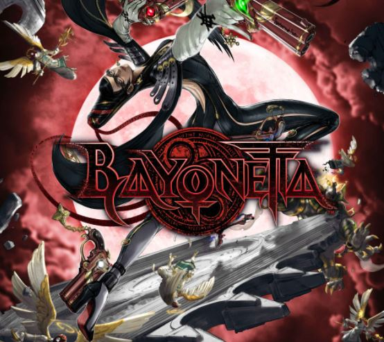

<body background="backba.jpg"></body>
    <marquee><font size="20" color=white >Najbardziej udane gry gatunku Spectacle Fighter  </font></marquee>
    
    <br>
    <center>
    </center>
        <br>
    <center>
    <meta http-equiv="Content-Type" content="text/html; charset=utf-8" />
        
    </nav>
        </fieldset>
        <br>
    <br>
  
    <hr color=red>

    <center>
        
<b><font size="50" color=white>Panel wyboru strony </font></b>
        <fieldset style="width:500px">
        
        <center>
            <nav>
                
                <button type="button"> <a style="word-spacing: 0cm" ;="" href="dmc.html">Devil May Cry</a></button>
                <button type="button"> <a href="mgr.html">Metal Gear Rising:REVENGEANCE</a></button>
                <button type="button"><a href="bayo.html">Bayonetta</a></button>
                <button type="button"> <a href="index.html">Strona główna</a></button>
              
        </nav> </fieldset>
        


    
        
    <hr color=red>

        
    <br>
    <fieldset style="background-color:rgba(20, 0, 0, 0.623);">
        <center>
    <b><font size="60" color=white>Bayonetta</font></b>
    <br>
    <br>
    <center>
    <b><font size="5" color=white>Bayonetta to osadzona w realiach fantasy, trzecioosobowa gra akcji w konwencji slashera, będąca trzecią z kolei produkcją w dorobku studia Platinum Games, założonego w 2007 roku przez byłych członków ekipy Clover Studios (God Hand, Okami czy seria Viewtiful Joe). Pieczę nad projektem sprawował Hideki Kamiya – wspótwórca serii Resident Evil oraz pierwszego Devil May Cry, którego duchową następczynią jest właśnie Bayonetta.
       
    
        </font></b>
    </fieldset>
    </center>


   <br>
   
   <hr color=red>
   <b><font size="70" color=white>Gameplay</font></b>
   <br>
   <iframe style="border: 7px solid rgb(228, 0, 0);" width="560" height="235" src="https://www.youtube.com/embed/XaBWCkEICLI" frameborder="0" allowfullscreen></iframe>
   
   <video width="560" height="235" controls>
    <source src="bayo.mp4" type="video/mp4">
    <source src="movie.ogg" type="video/ogg">
  Twoja przeglądarka nie obsługuje tego filmu
  </video>
<br>
  <b><font size="70" color=white>Muzyka</font></b>
  <br>
  <fieldset style="width:1px">


    <link rel="ayaya" href="ayaya.css">


    
    <style>
        body {
          background-color: rgb(0, 0, 0);
        }
        
        h1 {
          color: rgba(255, 255, 255, 0.726);
          
        }
        </style>


<style>
    h1{text-align: center; font-size:300%;}
</style>
    
    <h1 style="text-align:center;">Fly Me To The Moon</h1>
   
  <center>
  <audio controls>
    <source src="horse.ogg" type="audio/ogg">
    <source src="bayon.mp3" type="audio/mpeg">
  Twoja przeglądarka nie obsługuje plików mp3
  </audio>
 =
  </fieldset>
  <hr color=red>
  <hr color=white>